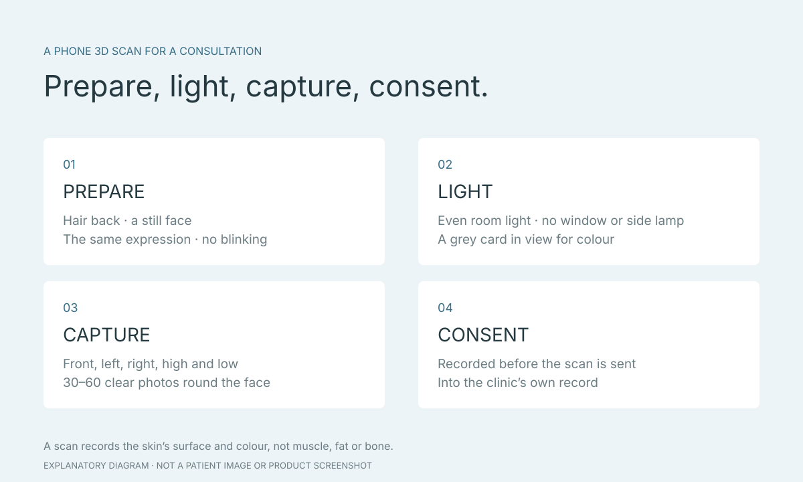

สแกนหน้า 3D ด้วย iPhone ด้วยแอป Faceliora Scan
สแกนหน้า 3D สำหรับ Faceliora Clinic ทำด้วยแอป Faceliora Scan บน iPhone เพราะ Faceliora Clinic ไม่ได้สแกนใบหน้าเอง คลินิกสแกนผู้รับคำปรึกษาด้วย Faceliora Scan แล้วเปิดสแกนนั้นในเคส ส่วนคลินิกที่ใช้เครื่องสแกนอื่นอยู่แล้วนำเข้าไฟล์ GLB, OBJ หรือ ZIP ได้ สแกนที่ดีคือจุดเริ่มของภาพจำลองที่ดี หน้านี้จึงอธิบายวิธีสแกนให้ได้ผลดี
Faceliora Scanแอปสแกนใบหน้าบน iPhoneใช้คู่กับ Faceliora Clinic

ประเด็นสำคัญ
- สแกนด้วย Faceliora Scan บน iPhone แล้วส่งสแกนเข้า Faceliora Clinic
- ใบหน้าที่นิ่ง ผมที่รวบไว้ และแสงที่สม่ำเสมอสำคัญกว่ารุ่นของโทรศัพท์
- ความยินยอมถูกบันทึกก่อนเก็บสแกนจากมือถือไว้ในระเบียนของคลินิก
จาก iPhone ถึงเคส
ใน Faceliora Scan ผู้สแกนเข้าสู่ระบบด้วยบัญชีคลินิกเดียวกับ Faceliora Clinic เลือกก่อนทำ (เคสใหม่) หรือหลังทำ (เคสเดิม) เลือกคนไข้ และยืนยันความยินยอมหากยังไม่มีบันทึก หลังสแกน แอปสร้างโมเดล 3D แล้วส่งเข้าคลินิก Faceliora Clinic แสดงสแกนนั้นในกล่องรับสแกนจากมือถือให้คลินิกเปิด การส่งเข้าคลินิกด้วยบัญชีขึ้นกับเวอร์ชันของ Faceliora Scan ที่ติดตั้ง ถ้าเวอร์ชันนั้นยังส่งไม่ได้ ให้บันทึกสแกนเป็นไฟล์แล้วนำเข้า Faceliora Clinic
ก่อนสแกน
การเตรียมตัวที่เหมือนกันทุกครั้งทำให้สแกนเทียบกันได้ง่ายขึ้น
- ใช้ iPhone ที่ Faceliora Scan รองรับ การสแกนตัวเองต้องมีกล้องหน้า TrueDepth
- รวบผมไม่ให้บังหน้าผาก หู และแนวกราม
- ใบหน้านิ่ง สีหน้าเดิม และไม่กระพริบตาจนสแกนเสร็จ
- แสงในห้องสม่ำเสมอ ปิดม่านและปิดโคมไฟข้างตัวผู้รับคำปรึกษา
- หนีบการ์ดสีเทาหรือ ColorChecker ที่คลินิกได้รับไว้ราบบนหน้าอก หันเข้าหากล้อง
ขณะสแกน
ถือ iPhone แนวนอน แล้วเคลื่อนรอบใบหน้าที่นิ่งอยู่ตามเครื่องหมายบนจอ ทั้งด้านหน้า ซ้าย ขวา สูง และต่ำ จนได้ภาพชัดพอ โดยทั่วไป 30–60 ภาพ แล้วตรวจว่าครบทุกด้านก่อนจบ ถ้าสแกนตัวเอง ให้วางโทรศัพท์นิ่งแล้วหันศีรษะตามเสียงบอก
นำเข้าไฟล์จากเครื่องสแกนอื่น
สแกนจากแอปอื่นเปิดได้ทั้งไฟล์ GLB, OBJ หรือ ZIP ที่มี OBJ พร้อมภาพสีผิว สีของผิวมาจากภาพสีผิว ส่วนมิลลิเมตรมาจากความกว้างใบหน้าที่คลินิกยืนยันบนสแกน หน่วยในไฟล์จึงไม่มีผล
ความยินยอมและความเป็นส่วนตัว
ใบหน้า 3D ระบุตัวบุคคลได้ จึงเป็นข้อมูลส่วนบุคคลตาม PDPA ระบบของคลินิกเก็บสแกนจากมือถือเฉพาะคนไข้ที่บันทึกความยินยอมไว้ ข้อมูลของแต่ละคลินิกแยกจากกัน และระบบบันทึกว่าใครเปิดหรือแก้ไขเคส การจำลองคำนวณบนคอมพิวเตอร์ของคลินิก การอธิบายวัตถุประสงค์และการขอความยินยอมยังเป็นหน้าที่ของคลินิก
สแกนบันทึกอะไรได้
สแกนบันทึกรูปทรงและสีของผิวด้านนอก ไม่เห็นกล้ามเนื้อ ไขมัน หรือกระดูก แสง การขยับ และเส้นผมเปลี่ยนสิ่งที่สแกนบันทึกได้ การเตรียมตัวแบบเดียวกันทุกครั้งจึงสำคัญ บทความสแกนหน้า 3D ด้วยมือถืออธิบายเรื่องนี้พร้อมงานวิจัย
บทความที่เกี่ยวข้อง
คำถามเกี่ยวกับการสแกนหน้า 3D ด้วย iPhone
Faceliora Clinic สแกนใบหน้าเองได้ไหม?
ไม่ได้ Faceliora Clinic รับสแกนจากแอป Faceliora Scan บน iPhone หรือเปิดไฟล์ GLB, OBJ และ ZIP จากเครื่องสแกนอื่น
ต้องใช้ iPhone รุ่นไหน?
รุ่นที่ Faceliora Scan รองรับ การสแกนตัวเองต้องมีกล้องหน้า TrueDepth และการสร้างโมเดล 3D บนเครื่องขึ้นกับรุ่น จึงควรตรวจรุ่นของ iPhone และเวอร์ชันของแอปกับทีมก่อนเริ่มใช้
สแกนส่งเข้าคลินิกอย่างไร?
ในเวอร์ชันที่เชื่อมบัญชีคลินิกได้ Faceliora Scan ส่งสแกนเข้าระเบียนของคลินิกภายใต้คนไข้ที่เลือก ทุกเวอร์ชันบันทึกสแกนเป็นไฟล์แล้วนำเข้า Faceliora Clinic ได้ ช่องทางที่ใช้ได้ขึ้นกับเวอร์ชันของแอป ควรตรวจกับทีมก่อนเริ่มใช้
ทำอย่างไรให้สแกนดีพอสำหรับการจำลอง?
ใบหน้านิ่งและสีหน้าเดิม รวบผม แสงสม่ำเสมอโดยไม่มีหน้าต่างหรือโคมไฟด้านข้าง และสแกนให้ครบทุกด้าน การ์ดสีเทาในภาพช่วยเรื่องสี
ต้องขอความยินยอมไหม?
ต้อง ระบบของคลินิกเก็บสแกนจากมือถือเฉพาะคนไข้ที่บันทึกความยินยอมไว้ และ Faceliora Scan ให้ยืนยันความยินยอมก่อนส่งหากยังไม่มีบันทึก